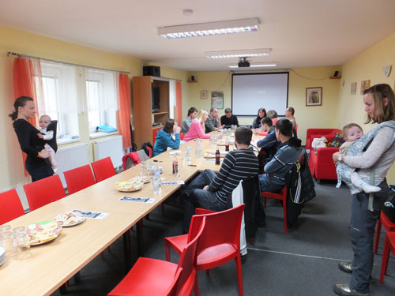
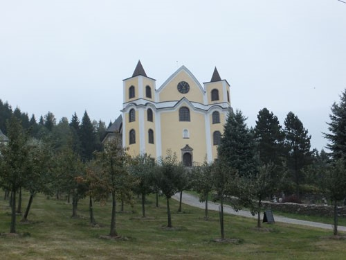
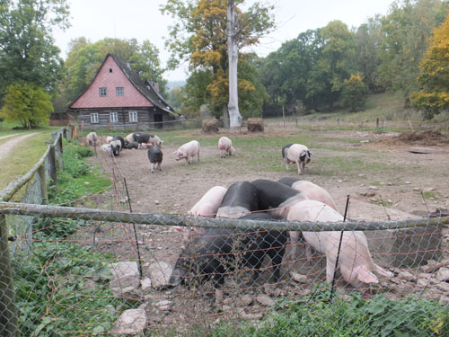

SPPK: Podporujeme podnikanie znevýhodnených mladých ľudí v poľnohospodárstve
Slovenská poľnohospodárska a potravinárska komora je odborným garantom projektu s názvom: BioFarma – naše zamestnanie, naše poslanie!
Projekt vznikol na základe súladu potrieb a činností dvoch partnerských organizácii YMCA-MZ Nitra a Lymfoma Slovensko. Keďže obidve organizácie pracujú so znevýhodnenými skupinami mladých ľudí (YMCA – sociálne a Lymfoma – zdravotne znevýhodnení), spoločne pripravili projekt, ktorého cieľom je pomôcť týmto cieľovým skupinám pripraviť sa na prácu alebo samostatné podnikanie v oblasti poľnohospodárstva.
Pilotná fáza tohto projektu začala v septembri 2015 a bude trvať do septembra roku 2016. Projekt bol finančne podporený z finančných zdrojov EÚ programu Erasmus+. Nadnárodným partnerom projektu z Českej republiky je Sdružení Neratov, ktoré má v rámci danej problematiky dlhoročné a vynikajúce skúsenosti.
BioFarma slúži ako tréningové centrum, kde budú mať mladí ľudia možnosť získať všetky potrebné teoretické a praktické znalosti a zručnosti, aby boli regionálne konkurencieschopní na trhu práce v poľnohospodárskom sektore.
Pre účely realizácie projektu, prenajali projektoví partneri v obci Neverice pri Nitre opustenú hospodársku usadlosť o veľkosti približne 35 árov, kde bude prebiehať najmä praktická časť projektu. Na základe vhodných podmienok a výmery poľnohospodárskej pôdy sa bude prvý rok na BioFarme pestovať tekvica Hokkaido a okrasné tekvičky na priamy predaj. SPPK zabezpečuje sériu workshopov, ktorá sa uskutoční na Agroinštitúte v Nitre v dňoch 09. – 10. 11. 2015. Účastníci budú mať príležitosť oboznámiť sa s agrotechnikou pestovania tekvice, chovom hospodárskych zvierat, ale aj chovom včiel, na zaujímavej exkurzii na rodinnej farme Mašekov Mlyn vo Vrábľoch. Takisto sa prídu podeliť o svoje skúsenosti so založením a fungovaním rodinnej farmy zameranej na bioprodukciu manželia Šataníkovci z farmy v Tomášove.
Projekt však týmito aktivitami zďaleka nekončí. V nasledujúcom období budú účastníci projektu pokračovať v osobnostnom rozvoji formou odborného vzdelávania aj praktickej prípravy priamo na farme. Partneri plánujú v budúcnosti projekt rozšíriť o vybudovanie chráneného bývania pre znevýhodnené skupiny, ako aj chránenej dielne, kde sa budú spracovávať vypestované komodity. Výborným príkladom a skvelou motiváciu sú aj aktivity českého projektového partnera Sdružení Neratov v Orlických horách, ktorí dokázali, že keď sa dá dokopy niekoľko šikovných ľudí, dokážu priam zázraky. V Neratove totiž dokázali obnoviť život v takmer zaniknutej obci, dať prácu 130 ľuďom so zdravotným znevýhodnením v oblasti poľnohospodárstva a služieb, založiť školu pre mentálne postihnuté deti, vybudovať školiace a vzdelávacie centrum, organizovať kultúrne podujatia a v neposlednom rade z úplnej ruiny vybudovať kostol, ktorý dnes priťahuje pútnikov z celej republiky.
My sme na začiatku, ale veríme, že aj takýmto spôsobom prispejeme svojou troškou k rozvoju poľnohospodárstva na vidieku prostredníctvom malých fariem a zapojením mladých ľudí zo znevýhodnených podmienok aj k udržaniu zamestnanosti na vidieku.

Občianskemu združeniu Neratov sa podarilo vybudovať niekoľko chránených dielní, chránené bývanie, ale najmä obnoviť obec Neratov, ktorá po vysídlení Sudetských Nemcov zostala takmer prázdna. Dovedna sa im podarilo vytvoriť 130 pracovných miest pre zdravotne znevýhodnených zamestnancov v oblasti poľnohospodárstva a služieb, čím sa združenie stalo najväčším zamestnávateľom v okolí.

V súčasnosti prichádzajú do obce tisícky pútnikov, ktorí hľadajú pokoj a ticho v zachránenom miestnom kostole Nanebovzatej Panny Márie.

Voľný chov tradičných českých plemien ošípaných.
Garant projektu: Slovenská poľnohospodárska a potravinárska komora
Projektoví partneri:
Lymfoma Slovensko www.lymfom.sk
YMCA Nitra http://www.ymca-nitra.sk/sk/
Sdružení Neratov www.neratov.cz
Ak sa o projekte a plánovanom programe workshopu chcete dozvedieť viac, kliknite na:
http://www.biofarma-slovakia.sk/program-na-november-2015/
Vypracovala: Marianna Čertíková, Odbor poľnohospodárstva a služieb SPPK
Zdroje: lymfom.sk, ymca-nitra.sk, neratov.cz, www.biofarma-slovakia.sk